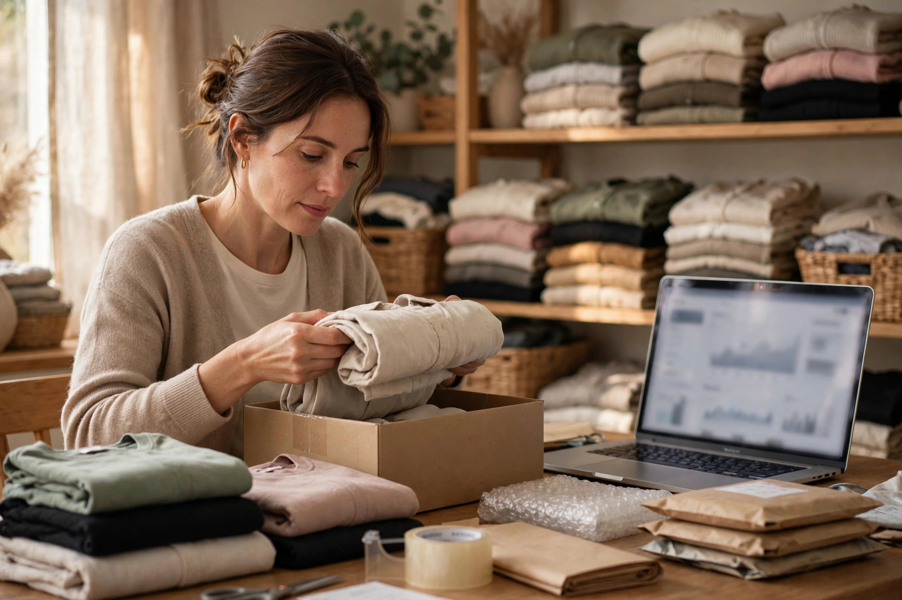

Running an online business from home has real advantages: no shop rent, no daily travel, and the freedom to build work around your family's life. It is how many sellers, especially women and young people in smaller towns, get their start. But home-based selling has its own trap. Without the structure of a shop or office, work spreads into every corner and every hour, stock mixes with household things, and orders get managed from memory until memory fails.
The difference between a home business that stays stressful and one that grows calmly is rarely the product. It is organisation. This guide covers the simple systems that make a home-based business feel professional to customers and manageable for the person running it.
Create a Small, Dedicated Work Corner
You do not need a separate building, but you do need a defined place. A corner, a table or one cupboard that belongs to the business gives you a packing station, a home for stock and a clear signal to yourself and your family that work is happening. Keep scales, tape, packaging, labels and your order book together there, so packing an order never becomes a search through the whole house.
Keep stock separate from household items and count it regularly. Knowing exactly what you have prevents the painful message every seller dreads: telling a customer who has already paid that their item is actually finished. A tidy stock corner, photographed honestly, also gives you real product photos that build trust, as our guide to building trust in an online store explains.

Give Your Day a Simple Routine
Without opening hours, it is easy to work in fragments all day and feel busy without finishing anything. A simple routine fixes this: set times for checking and replying to messages, a packing time before your courier's collection or drop-off, and a weekly slot for updating listings, counting stock and reviewing money. Customers benefit too, because a seller with a routine dispatches predictably instead of randomly.
Publish your reply hours honestly on your profiles and use the greeting and away messages described in our WhatsApp Business tips for sellers. Being reachable at stated times looks more professional than being vaguely available at all hours and slow in practice.
Keep Business Records and Money Separate
From the first sale, record every order, payment, expense and delivery outcome in one place. Keep business money visibly separate from household money, even if that simply means a dedicated account or wallet and a weekly summary. Many home businesses fail quietly because the owner never sees clearly whether they are earning or slowly losing.
- Record orders the day they arrive, not from memory at the weekend.
- Note packing, delivery and return costs against each product.
- Set aside money for restocking before treating income as profit.
- Review the numbers monthly and adjust prices or range honestly.
Look Professional in Every Customer Contact
Customers cannot see your home, and they do not need to. They judge you by your messages, your pages and your parcels. Use your business name consistently, write clear product descriptions, and present a proper online home for the business. A simple website with accurate pages gives even the smallest home seller a credible address on the internet, and our ecommerce SEO service helps those pages be found by people searching on Google.
Pack as a business packs: correct item, checked before sealing, neat wrapping, clear address and phone number, and a short note or invoice inside. When a parcel looks cared for, customers assume the seller is careful too, and they are usually right.
Protect Family Time and Your Own Energy
The hidden cost of home-based work is that it never visibly ends. Messages arrive during meals, packing waits during family time, and the business quietly takes the whole day. Protect boundaries early: a separate business number or account where possible, stated working hours, and at least some time each week when the business is genuinely closed in your mind as well as on your page.
Explain your setup kindly to your household too. When family members know your packing time and your quiet reply time, they can support the business instead of competing with it. Many home sellers find that a family that understands the routine becomes the business's first team.
Grow Deliberately, Not Accidentally
As orders grow, improve one system at a time: better storage, a second courier option, help with packing, or your own website to reduce dependence on social platforms. Our overview of starting an online business in Pakistan places these steps in order. Growth that follows your capacity stays enjoyable; growth that outruns it creates refunds, complaints and exhaustion.
A home-based business is a real business. Organised space, a calm routine, clean records and professional contact will let yours grow from a spare corner into something lasting, without taking over the home it started in.

Frequently Asked Questions
Can customers tell I work from home, and does it matter?
Some may guess, and it usually does not matter if your service is professional: clear communication, tidy packing, honest descriptions and reliable delivery. Customers judge the experience you give them, not the size of your premises.
How do I stop the business taking over the whole day?
Set working hours for replies and packing, tell customers those hours, and use saved messages outside them. A business phone or separate account also helps you switch off properly while still looking professional.
What is the first system a home seller should set up?
A simple order record. Note every order, payment, dispatch and delivery in one place from the first sale. It prevents lost orders, helps with courier follow-ups and shows you clearly whether the business is making money.
When should a home business move to a separate space?
When stock, packing or customer work no longer fits your home life comfortably, or when orders regularly need more hands than your household can give. Let real pressure, not pride, decide the timing.
Want More Customers From Google?
Call 0327 7350830 or email seozaheer14@gmail.com. Zaheer Seo Expert, Layyah - Rajan Shah Road, Rana Nagar, Chak 116 TDA, Pakistan. Open 24 hours.
Get Your SEO Strategy →